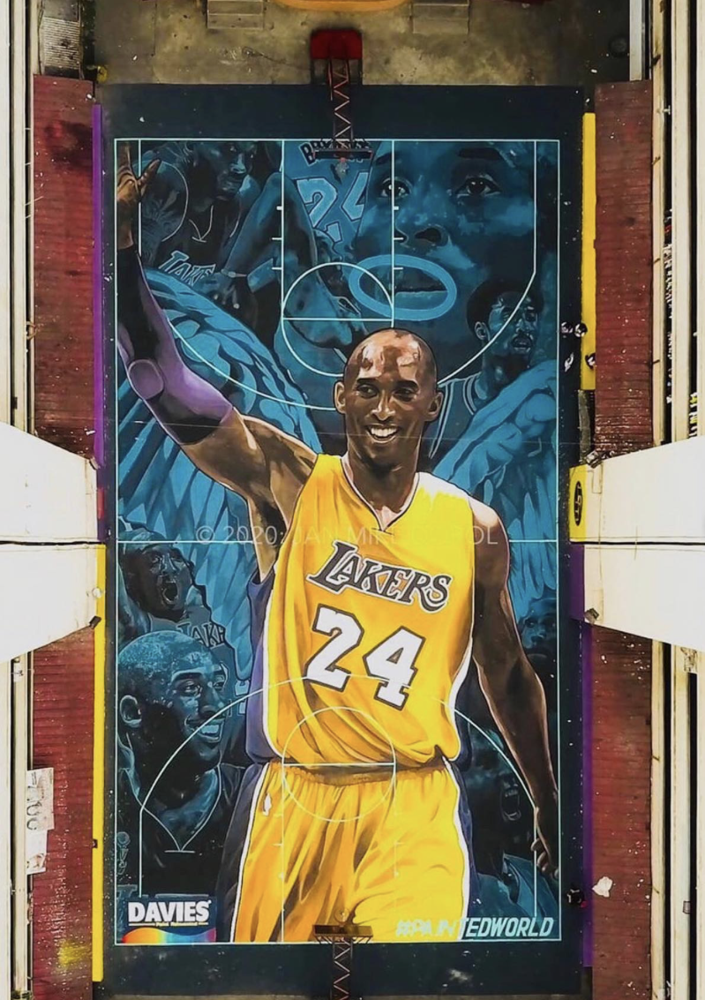
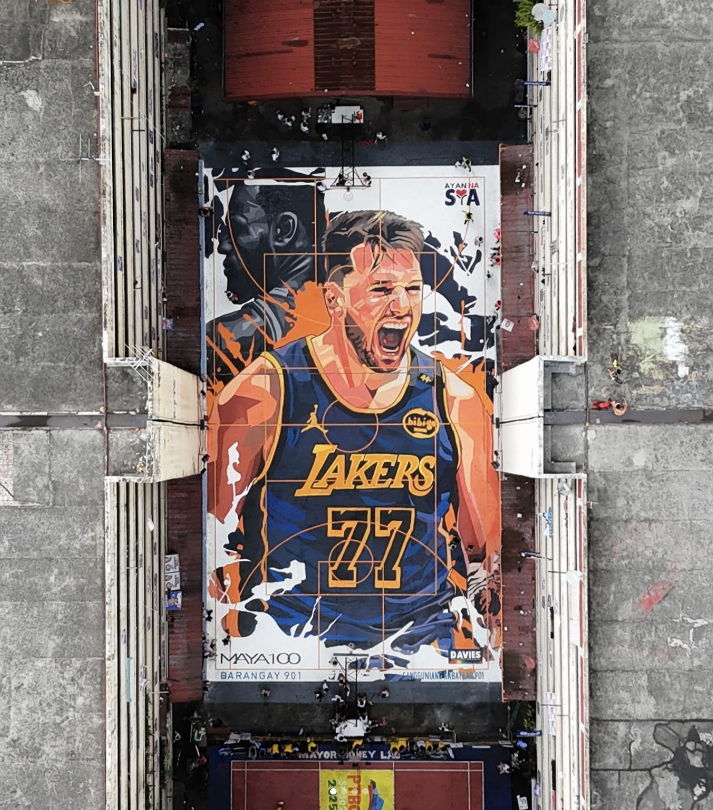
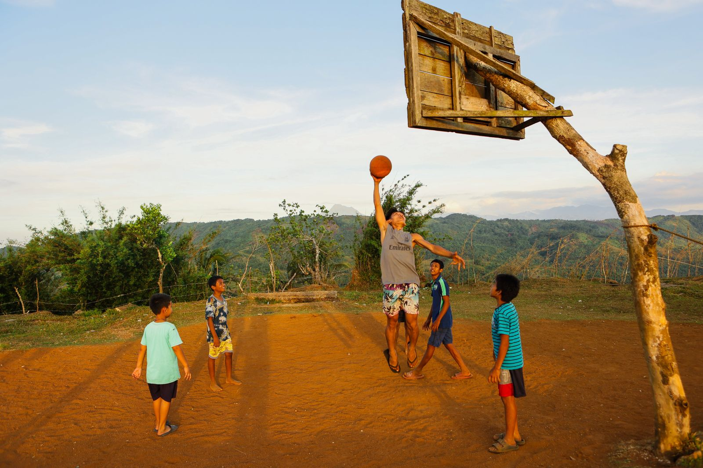

In the Philippines, three Bs stand out: boxing, beauty pageants, and basketball.
Out of the three, basketball has become deeply ingrained in everyday life. From makeshift backboards nailed to trees to covered courts at the heart of barangays — the country's smallest government units — hoops can be found almost everywhere.
Ask a first-time visitor to count the basketball hoops they pass on a drive through the Philippines, and they'll likely lose track before the journey ends.
"Of all the places that I've traveled, this has so much passion and enthusiasm for the game."
— Kobe Bryant


Artist: @themayacarandang || Instagram
Philippine hoops appear in various forms — a rim nailed to a tree, a painted court on public pavement, or a covered court at the center of a barangay. Parking lots become makeshift courts, while quiet residential streets transform into playing surfaces when traffic dies down. Sometimes even if it doesn't. Many of these informal spaces never make it onto a map.

Photos: Denniz Futalan / Pexels; Adrien Brun / Unsplash
"Anywhere you look you can see groups of kids playing on a makeshift basket on a telephone pole, on the side of a building, in 3 feet of rainwater... It's a powerful visual."
— Erik Spoelstra, Filipino-American NBA coach